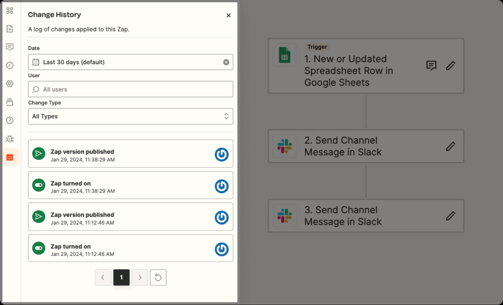
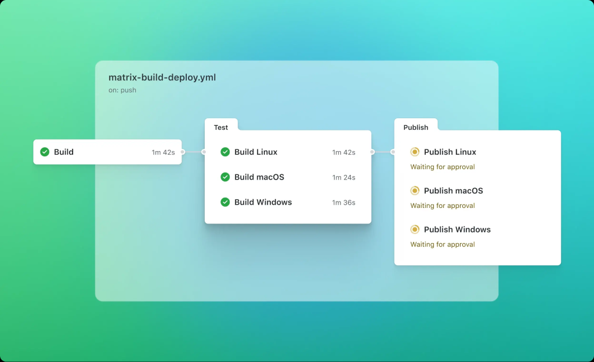
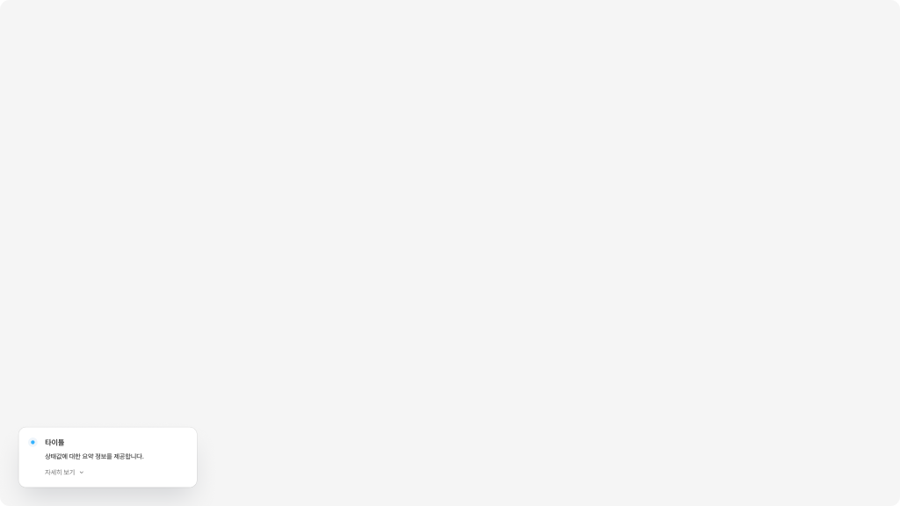
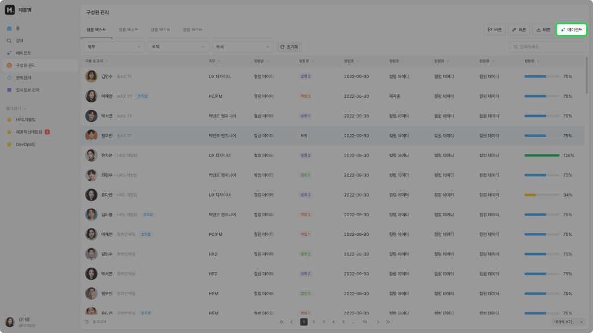
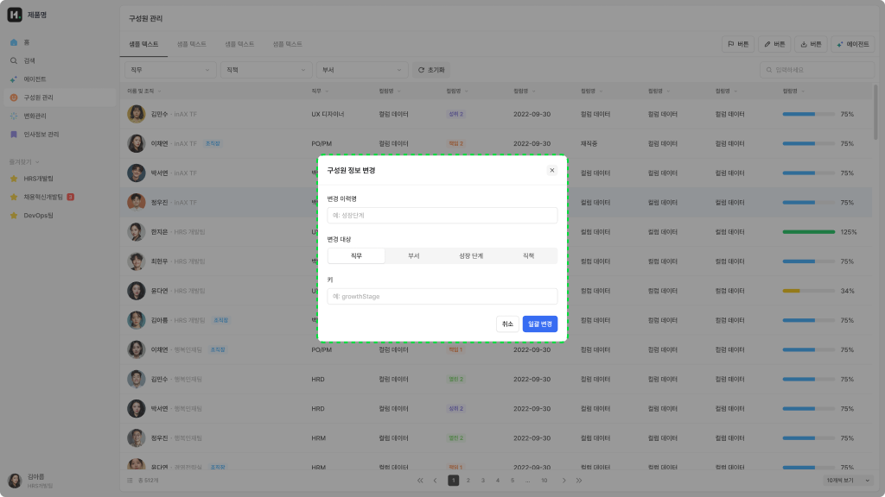
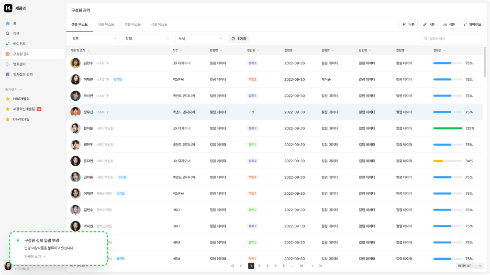
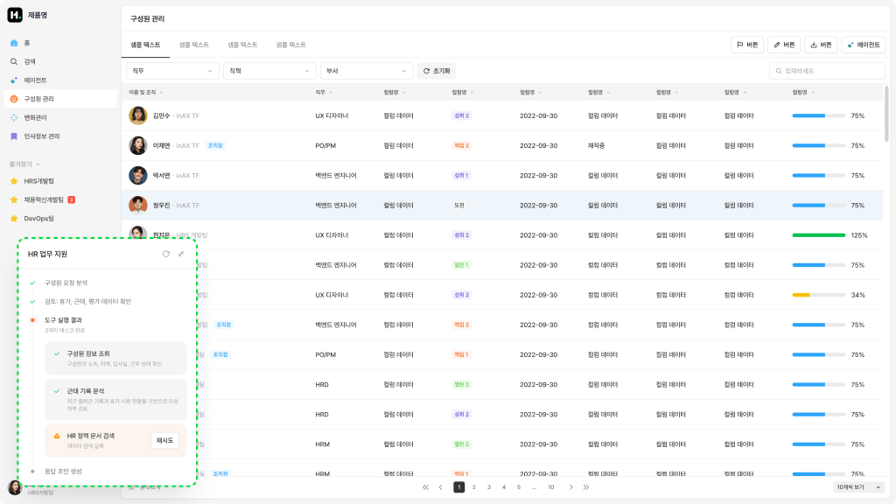

Pattern / Background
Background Task Monitor
사용자가 실행한 AI 작업이 백그라운드에서 진행되는 동안 상태를 확인할 수 있게 하는 UI 패턴입니다. 진행률·단계·대기열·완료·실패를 추적하고, 완료된 결과를 열거나 실패한 작업을 재시도할 수 있습니다.
Live Demo
Overview
Background Task Monitor는 사용자가 AI 작업을 실행한 뒤, 작업이 백그라운드에서 진행되는 동안 상태를 확인할 수 있게 하는 UI 패턴입니다. 사용자는 AI가 작업을 수행하는 동안 계속 대화로 리드하지 않아도 되며, 진행률·단계·대기열·완료 여부·실패 사유를 확인합니다. 작업이 끝나면 사용자는 결과를 열어보거나, 실패한 작업을 재시도하거나, 완료된 결과를 다음 업무로 연결할 수 있습니다. 이 패턴은 AI 작업이 즉시 끝나지 않거나, 여러 작업이 동시에 실행되거나, 사용자가 다른 화면으로 이동해도 작업 상태를 계속 인지해야 할 때 적합합니다.
이 분류를 선택하는 경우
| 선택 조건 | 설명 |
|---|---|
| AI 작업이 즉시 완료되지 않는다 | 분석, 생성, 변환, 일괄 처리처럼 시간이 걸리는 작업을 사용자가 기다려야 하는 경우 |
| 사용자가 작업 진행 상태를 알아야 한다 | 작업이 진행 중인지, 완료됐는지, 실패했는지 사용자가 명확히 확인해야 하는 경우 |
| 사용자가 다른 일을 하면서 작업을 맡길 수 있어야 한다 | AI 작업을 실행한 뒤 현재 화면을 떠나도 작업이 계속 진행되어야 하는 경우 |
| 여러 AI 작업을 동시에 관리해야 한다 | 여러 요청이 대기, 실행, 완료, 실패 상태로 쌓이고 목록으로 관리되어야 하는 경우 |
| 완료 후 결과 진입점이 필요하다 | 작업이 끝난 뒤 사용자가 결과 화면, 파일, 리포트, 산출물로 이동해야 하는 경우 |
이 템플릿을 사용하지 않는 경우
| 선택하지 않는 경우 | 대신 고려할 패턴 |
|---|---|
| 사용자가 AI와 직접 대화하며 즉시 응답을 받아야 한다 | Global Chat Assistant |
| 특정 산출물을 작업공간 안에서 AI와 함께 편집해야 한다 | Dedicated Agent Workspace |
| 현재 화면을 유지한 채 AI 패널에서 도움을 받아야 한다 | Contextual Agent Panel |
| 사용자가 자동화 흐름이나 에이전트 자체를 구성해야 한다 | Agent / Workflow Builder |
Key Characteristics
| 구분 | 내용 |
|---|---|
| 진입 방식 | AI 작업 실행 버튼, 자동화 실행, 일괄 처리 요청, 백그라운드 생성 요청 |
| 입력 방식 | 작업 대상, 실행 조건, 처리 범위, 우선순위, 참조 데이터 |
| 응답 방식 | 진행률, 단계 상태, 대기열, 완료 알림, 실패 사유, 결과 링크 |
| 컨텍스트 활용 | 실행한 작업 정보, 대상 데이터, 요청 조건, 작업 로그, 이전 실행 기록 |
| 사용자 흐름 | 작업 실행 → 진행 상태 확인 → 완료 또는 실패 확인 → 결과 보기 또는 재시도 |
| 주요 가치 | 긴 AI 작업을 사용자가 기다리지 않고도 안정적으로 맡기고 추적할 수 있게 함 |
주요 예시 레퍼런스
실제 제품에서 Background Task Monitor 패턴이 어떻게 구현되는지 보여주는 대표 사례입니다.
Zapier Zap History
Zapier는 AI 에이전트 UI라기보다 자동화 워크플로우 도구에 가깝지만, 실행·변경 이력을 추적하는 구조를 참고하기 좋습니다. Zap이 게시되거나 켜지는 등 중요한 변경이 시간순으로 쌓이고, 사용자는 특정 기간, 사용자, 변경 유형을 기준으로 히스토리를 확인할 수 있습니다. 백그라운드 작업이나 자동화 실행 결과를 사용자가 나중에 확인하고, 문제 발생 시 이전 상태를 추적해야 하는 경우에 유용한 구조입니다. Zapier는 Zap을 게시할 때마다 새 버전을 만들고, 변경 내역을 검토할 수 있다고 설명합니다.

GitHub Actions
GitHub Actions도 AI 에이전트 UI는 아니지만, 다단계 백그라운드 작업의 진행 상태를 보여주는 대표적인 구조입니다. Build, Test, Publish 같은 Job과 Step이 순차적으로 실행되고, 각 단계는 성공, 진행 중, 대기, 실패 상태를 가집니다. 특히 배포 단계에서 승인 대기 상태를 표시하고, 사용자가 승인하거나 거절할 수 있는 구조는 장시간 실행 작업의 상태 모니터링과 개입 지점 설계에 참고하기 좋습니다. GitHub는 워크플로우 실행이 Job과 Step으로 구성되며 로그와 상태를 확인할 수 있다고 설명하고, 배포 작업은 승인 또는 거절 흐름을 가질 수 있다고 안내합니다.

Basic Layout Structure
Background Task Monitor는 사용자가 실행한 AI 작업의 진행 상태와 결과 진입점을 보여주는 구조를 가집니다. 하위 분기에 따라 Persistent Progress Panel, Task Queue, Completion Notification으로 나뉘지만, 기본적으로는 Task Entry Point, Task Status Area, Progress / Step Area, Result Entry, Recovery Action으로 구성됩니다.
레이아웃 원칙
| 원칙 | 설명 |
|---|---|
| 상태 명확성 | 작업이 대기 중인지, 진행 중인지, 완료됐는지, 실패했는지 명확히 구분합니다. |
| 비동기성 인지 | 사용자가 화면을 떠나도 작업이 계속 진행된다는 점을 인지할 수 있어야 합니다. |
| 결과 진입성 | 완료 후 결과를 열거나 다음 단계로 이동할 수 있는 명확한 진입점을 제공합니다. |
| 실패 복구성 | 실패 시 사유, 재시도, 조건 수정, 취소 등 복구 경로를 제공합니다. |
| 방해 최소화 | 진행 상태를 알리되, 사용자의 현재 작업 흐름을 과도하게 방해하지 않아야 합니다. |
| 다중 작업 관리 | 여러 작업이 있을 경우 개별 작업 상태와 전체 큐 상태를 함께 파악할 수 있어야 합니다. |
Variants
Background Task Monitor는 작업 상태를 얼마나 지속적으로 보여줘야 하는지, 여러 작업을 관리해야 하는지, 완료 후 얼마나 강하게 알릴지에 따라 하위 UI가 나뉩니다.
| 하위 분기 | 한 줄 정의 | 선택 기준 |
|---|---|---|
| Persistent Progress Panel | 화면 안에 작업 진행 상태를 지속적으로 보여주는 UI | 사용자가 작업이 진행 중임을 계속 인지해야 할 때 |
| Task Queue | 여러 AI 작업의 대기, 진행, 완료, 실패 상태를 목록으로 관리 | 여러 작업이 동시에 또는 순차적으로 실행될 때 |
| Completion Notification | 작업 완료 후 결과 진입점을 알림으로 제공하는 UI | 작업 중에는 자세한 상태가 필요 없고, 완료 후 알려주면 되는 경우 |
Persistent Progress Panel
AI 작업이 진행되는 동안 화면 안에 지속적으로 상태를 보여주는 UI입니다.

Task Queue
여러 AI 작업이 동시에 또는 순차적으로 진행될 때, 작업 목록과 개별 상태를 관리하는 UI입니다.
Completion Notification
AI 작업이 완료되었을 때, 사용자에게 짧은 알림과 결과 진입점을 제공하는 UI입니다.
Interaction
Trigger - Background Task Start
사용자가 AI 작업 실행, 일괄 처리, 자동화 시작, 생성 요청 등을 통해 백그라운드 작업을 시작합니다.

전역 혹은 특정 기능 페이지 내의 버튼, 내비게이션 요소를 통해 AI Assistant를 호출합니다.
Input - Task Scope
사용자는 작업 대상, 처리 범위, 실행 조건, 참고 데이터, 결과 형식을 지정합니다.

정보는 사전에 입력되어 있거나, 자연어로 사용자가 요청하거나, 복합 필드의 구성 등 다양한 형태로 입력 받습니다.
Output - Task Status
AI는 진행 중, 대기 중, 완료, 실패, 취소 등 작업 상태와 진행률 또는 단계 정보를 제공합니다.

요청 이후 백그라운드로 동작하는 경우, 처리 상태와 보조 정보를 제공합니다.
Follow up - Open Result or Recover
사용자는 완료된 결과를 열거나, 실패한 작업을 재시도하거나, 작업을 취소하고 조건을 수정할 수 있습니다.

완료, 실패, 권한 확인 등 상태에 대한 후속 조치로 결과 확인, 재시도 등 추가적인 액션을 수행할 수 있습니다.